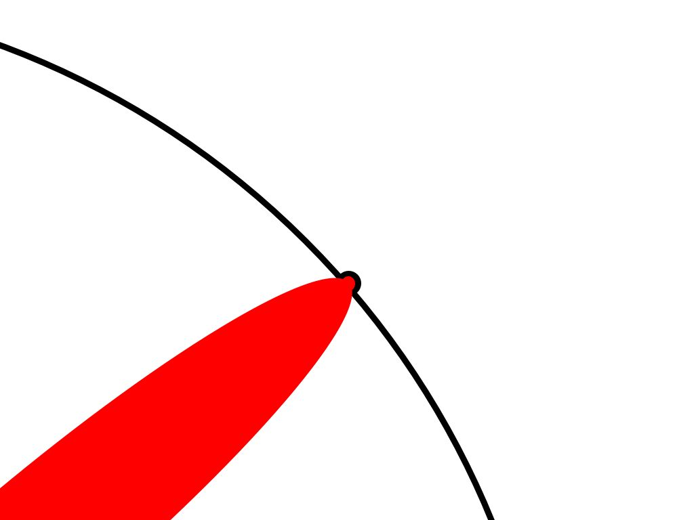
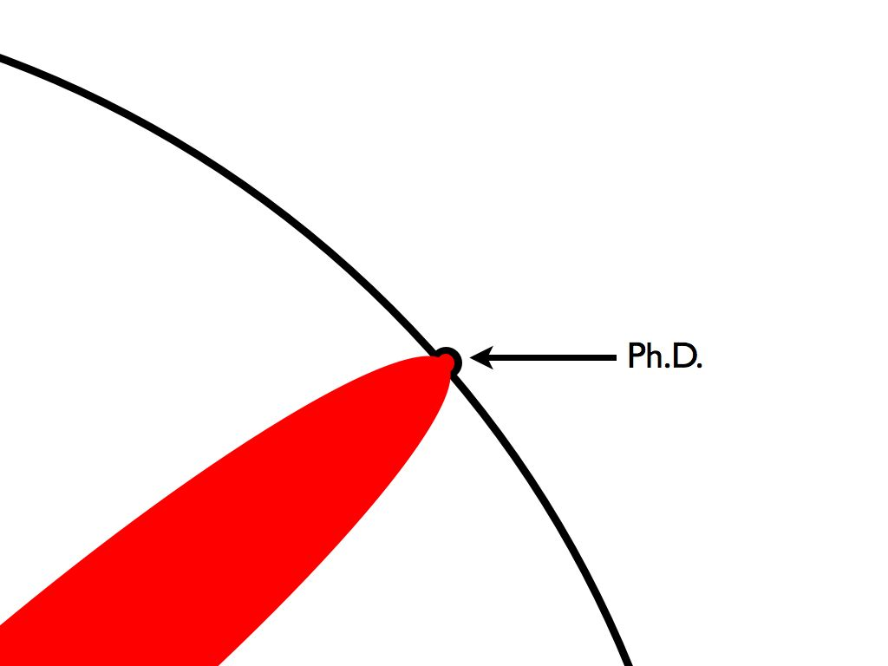

The following material was created by Matt Might. I would like to thank him for generously agreeing to share this material. It was originally posted at this site.
Imagine a circle that contains all of human knowledge.

By the time you finish elementary school, you know a little:

By the time you finish high school, you know a bit more:

With a bachelor's degree, you gain a specialty:

A master's degree deepens that specialty:

Reading research papers takes you to the edge of human knowledge:

Once you're at the boundary, you focus:

You push at the boundary for a few years:

Until one day, the boundary gives way:

And, that dent you've made is called a Ph.D.:

Of course, the world looks different to you now:
So, don't forget the bigger picture:

Moral of the story : Keep Pushing